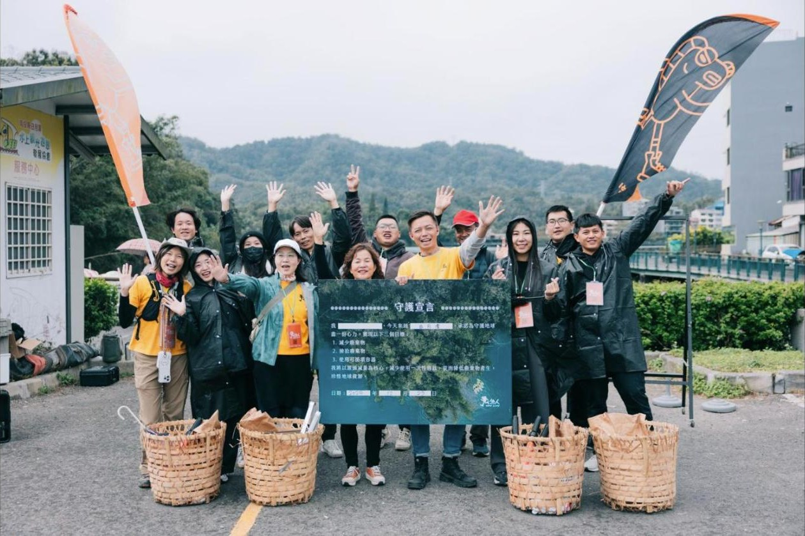
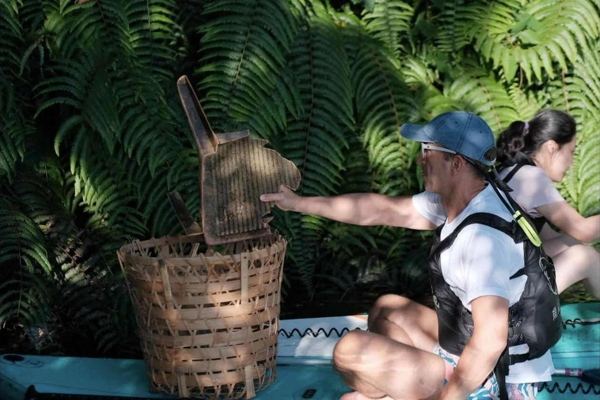
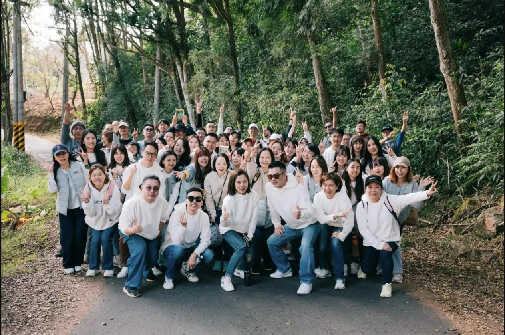
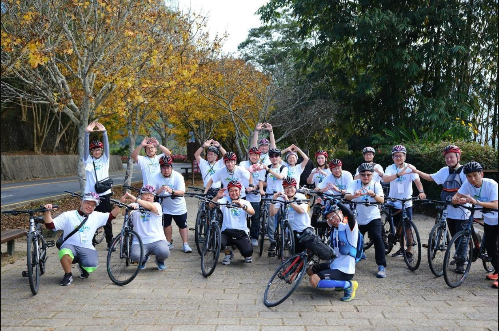
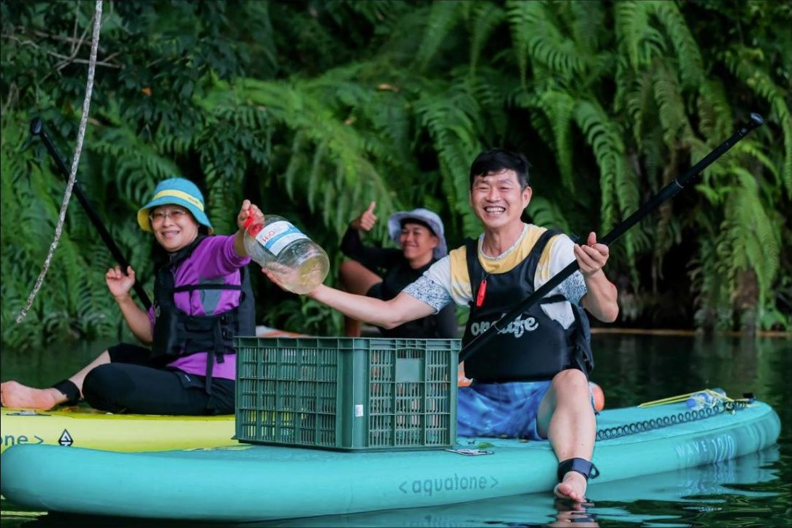

每一場活動，
我們都把數字留下來。
我們都把數字留下來。

撿了多少、少用了多少、帶進在地多少消費
這是企業寫永續報告、學校寫成果的原料
這是企業寫永續報告、學校寫成果的原料
累計到現在To date
[場]
企業與學校活動場次
2013 年起
2013 年起
[人次]
參與人次
含志工與導覽老師
含志工與導覽老師
100+ kg
拾光行動撿拾垃圾
ONELIFE 認養 3 條路線
ONELIFE 認養 3 條路線
[元]
帶進在地店家的消費
麵包、餐飲、住宿
麵包、餐飲、住宿
方括號的數字從本週場次開始彙整親清日月潭歷年 30 到 40 場資料後補上；撿拾公斤數來自拾光行動田野調查記錄。
田野調查記錄Field records
每場拾光行動結束，現場秤重、分類、清點。以下是企業參與後留下的紀錄，菸蒂永遠是第一名。
阿法拉伐股份有限公司 · 112 人8.3 kg菸蒂 678、食品包裝 76、免洗餐具 29；另回收 11.6 kg
逸凡科技股份有限公司 · 73 人21 kg寶特瓶 17、飲料瓶與食物容器 13、菸蒂 37
綠色旅遊示範體驗營 · 45 人5.8 kg寶特瓶 9、菸蒂 21、外帶飲料杯 3
台灣所立克股份有限公司 · 30 人1.37 kg菸蒂 139、塑膠袋 6、寶特瓶 2

三條親清路線Clean & Green

山系 · 親山也清山金龍山或貓囒山步道導覽、實境解謎、登頂品茗、回程淨山
路系 · 留輪跡不留痕跡單車領騎導覽、月牙灣撿廢、在地下午茶，零碳移動
水系 · 愛水也護水SUP 教學、水上導覽、湖上淨潭、湖邊無痕野餐，與好盒器合作循環容器地方培力People

影響力不只在湖裡，也在人身上。2027 年起，我們和日月潭觀光導覽暨交流協會一起做三件事：
01
在地孩子志工培訓
招募魚池、埔里的國中到大學學生，賽前培訓服務應對、水域安全、地方故事，給零用金與志工證明
02
「立」免費 SUP 公益體驗
為南投社福機構與兒少團體辦的立槳與水域安全教育，同時試做身障與高齡友善的接待流程
03
年度影響力報告
與暨南國際大學合作，用 SROI 架構計算投入一元換回多少效益，2027 年賽後出第一本
守護宣言Declaration
守護自己
以 SUP、單車親近自然，用旅行增添健康；品味當季在地食材，減少浪費與食物里程。
守護文化
選購當地產品，不餵動物、不採植物，留下回憶、帶走垃圾。
守護環境
自備水壺、餐具、購物袋；善用大眾運輸、步行或單車；參與環境教育，成為責任旅人。